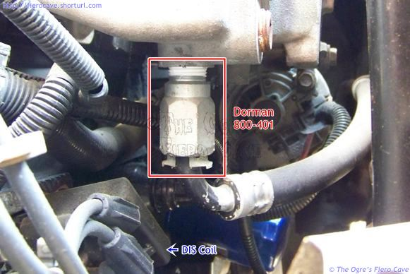

Go Home
Site Map
Go Home
Site Map
Heater (Sub)System
Below is a typical plumbing map for a cooling system. In the real world, the heater can be fed from almost anywhere on the engine. For TBI and Carburetor motors, it's common to feed the heater from an outlet on the intake manifold. This is how the Fiero L4 motor is done. The outlet on the manifold also allows heating the intake to prevent fuel from pooling below the TBI. I'm not sure where the heater outlet is on the V6.

Having Heater problems?
Note: Heater circuit blocked can act like the thermostat is bad.
- Is plumbing crunched or hose is pinch? Check it from end to end.
- Check/replace Thermostat. Bad Tstat can fail open or closed and if it fails Open then Heater output is low.
- "Revere flow" flush. Do this twice DIY or call a Radiator Shop.
- L4 engine? Check heater outlet on engine. Heater outlet on L4 is a metered connection and can be block. Sometime revere flows flush may get it. Try it first.
- Replace heater core. The core can flow coolant but still be blocked. (It's how its designed...)
Quick Connector
Used in 87-88 L4
Warning: Made sure you have a Dorman 800-401 outlet fitting Before you do anything. It will leak or break. If you break it, use ez-out or Dorman 800-408.
Warning: Coolant is electrical conductor. It will kill DIS and maybe HEI. Keep DIS/HEI covered!
Notes:
There is another Quick Connect under the car. Do not confuse
it with this Dorman part. It's not a "Metered connection." This part is leaking?
Check the O-ring first. Some people have change O-ring and fixed it. Worst case, use pumping parts.
I don't know where the V6 is located or for sure if V6 uses one. Sorry. I don't work on V6 very often.
 Source: Dorman 800-401 in my Fiero 87 Sport L4 engine.
Visit Dorman web site. Search "Part Number or Keyword" and use 800-401. Note: The part is not list (in "Detailed Application") for Fiero but it will fit. Get it at most auto part store. NAPA and some other brand also carry it.
Why a "metered connection?"
See inside the OE or Dorman part. It has a hole, Dorman use a rubber washer, about 9/32 inch. Big part but small opening and thus meter connection. (OE is all metal but maybe rusted thru.)
Why can't I use pumping parts to fix it?
Some Plastics are not temperature and/or chemical stable.
Pumping parts may work but may cause cooling system problem because it too big. Watch for problem. It can cause problem, especial up north in winter, because engine can't warm up as fast as it should or not at all.
My guess you need:
1" nipple
90°
hose barb
If you use something to reduce coolant flow... Dorman's "Washer" size is 9/32 inch. Reducing part can be a washer etc. and soldered/epoxy inside the 90° or anywhere. Solder etc to keep it in place.
Problems?
Engine does moves (See Torque Strut) and normal plumbing doesn't move. GM fitting allow hose to move a little.
Using normal plumbing parts could stress the hose for this reason. Make sure you have enough hose. Iffy dog bone can breaks things. Auto trans is worse but stick can have same problem. If you put hose barb so hose is long as possible w/o kinking is a good plan.
Is fitting a Metric or SAE thread?
Nether... NPT means National Pipe Thread. NPT Course, 1/2 Inch. All pipe fitting and sensor use it.
Does the 84-86 years L4 have the "metered connection" to?
The fitting under the intake manifold is it. If you are careful, using Flare Wrenches is best, and then clean it out. You shouldn't need to remove the fitting from the manifold. See this from the Forum.
Heater is leaking
A/C and Heater? See forum here...